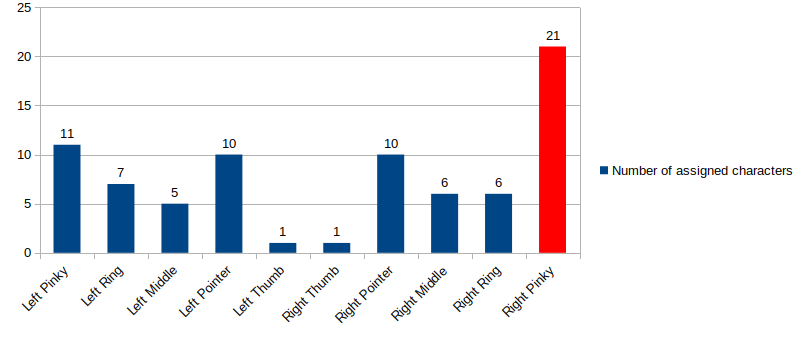

Oct 1, 2020¶
I decided to take the plunge and purchase an Ergodox EZ keyboard. This wasn’t an immediate decision–one does not simply purchase fantastically expensive, strange-looking keyboards on a whim. I should note that I already have a high-quality, fairly expensive keyboard (Daskeyboard with all-blank keycaps) that I got for free (long story). However, as I’ve accepted the fact that programming will inevitably consume the overwhelming majority of my time working in industry, I’ve realized that I need more. Specifically, I need my keyboard to be
Ergonomic
Programmable
The first is self-explanatory. I don’t want to wreck my body and posture to conform to a user interface that was designed in the 1870’s. I also, similar to many people, like being comfortable; hence the desire for ergonomics.
But why a programmable keyboard? I should first clarify what I mean by programmable: programmable keyboards give you the ability to completely rearrange the keyboard layout. You might have heard already about different ways to arrange the letters on a keyboard–Dvorak, Colemak, etc. I’m actually not interested in arranging the letters though–I’m fine with how the letters are in the QWERTY layout. What I’m really interested in is rearranging the special characters.
Here’s why: I want to become a faster programmer. Speed of programming is dependent (to some extent) on your typing speed. In the spirit of James Clear’s article on aggregation of marginal gains, I decided earlier this summer to improve my typing form to increase my speed. After a few rounds of programming typing practice (e.g. on typing.io, I became aware of a glaringly painful problem with the QWERTY keyboard layout.
To see the problem, first take a look at this common fingering assignment chart for touch typing–there might be a few variations here and there, but most charts look largely like this one. Now, any non-programmers reading this need to realize that programmers generally end up using every special character on the keyboard. Most are used quite extensively. Brackets such as (), {}, [], <>? C++ uses them everywhere. The weird vertical line | that you always wondered what was for as a kid? It’s bread-and-butter in BASH and LaTeX. The tilde ~? It’s used for logical NOT in MATLAB. The weird backwards tick mark ` ? Any LaTeX user can tell you about the quirks of needing those for proper looking ``quotations”.
{kind=link}
Now let’s make a quick chart of the number of letters/characters assigned to each finger. Letters count as one character (includes both lower and upper case), each special character counts as a separate character (even if they’re on the same key), and keys such as CTRL, Enter, Backspace each count as one character. Only the keys assigned on that chart previously are considered (e.g. this doesn’t include Esc or Alt).
Here’s the chart:

This is insanity. Your right pinky alone has almost twice as many characters assigned to it as any other finger. To make matters worse, the right pinky is assigned some of the most frequently used characters in programming including Backspace, Enter, =, +, -, _, ;, :, ", along with both slashes /, \; the square brackets [], and the curly braces {}. Your left pinky has the second most characters assigned to it. 14 years of piano lessons as a child taught me that your pinkies are neither the fastest nor strongest fingers on your hands.
The fastest two fingers for ‘trilling’ (repeating keystrokes really fast) tend to be your pointers and middle fingers. And yet the middle fingers have among the lowest number of keys assigned to them. Your thumbs may not be quite as fast, but they’re certainly stronger than your pinkies. And how many keys are they assigned? One. Even worse, it’s the same key (Spacebar). And we haven’t even started discussing other issues such as how awkward it is to stretch up and reach the numbers row, especially given how often numbers are used in programming (read: all the time).
From these facts I have concluded that anyone trying to improve their programming typing speed using the standard touch typing layout is doomed to eventually hit a brick wall. Hard. Your right pinky can only move so fast….
Hence the need for a programmable keyboard–it gives you the option for redistributing the load more evenly. This is perhaps a programmer’s only hope for being able to keep increasing her/his typing speed. The Ergodox EZ is both programmable and ergonomic. Hence the decision to purchase it. Crossing my fingers that it doesn’t take too long to get used to.